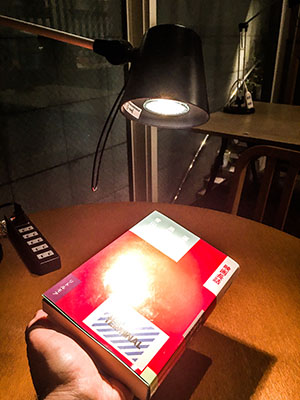

Cet article est la suite de WebGL 3D Éclairage directionnel. Si vous ne l’avez pas lu, je vous suggère de commencer par là.
Dans le dernier article, nous avons couvert l’éclairage directionnel où la lumière vient uniformément de la même direction. Nous avons défini cette direction avant le rendu.
Et si au lieu de définir la direction de la lumière, nous choisissions un point dans l’espace 3D pour la lumière et calculions la direction depuis n’importe quel point de la surface de notre modèle dans notre shader ? Cela nous donnerait une lumière ponctuelle.
Si vous faites pivoter la surface ci-dessus, vous verrez comment chaque point de la surface a un vecteur surface vers lumière différent. Obtenir le produit scalaire de la normale de surface et de chaque vecteur surface vers lumière individuel nous donne une valeur différente à chaque point de la surface.
Alors, faisons cela.
D’abord, nous avons besoin de la position de la lumière
uniform vec3 u_lightWorldPosition;
Et nous avons besoin d’un moyen de calculer la position world de la surface. Pour cela, nous pouvons multiplier nos positions par la matrice world donc…
uniform mat4 u_world;
...
// calculer la position world de la surface
vec3 surfaceWorldPosition = (u_world * a_position).xyz;
Et nous pouvons calculer un vecteur de la surface vers la lumière, ce qui est similaire à la direction que nous avions avant, sauf que cette fois nous le calculons pour chaque position de la surface vers un point.
v_surfaceToLight = u_lightPosition - surfaceWorldPosition;
Voilà tout cela en contexte
#version 300 es
in vec4 a_position;
in vec3 a_normal;
+uniform vec3 u_lightWorldPosition;
+uniform mat4 u_world;
uniform mat4 u_worldViewProjection;
uniform mat4 u_worldInverseTranspose;
out vec3 v_normal;
+out vec3 v_surfaceToLight;
void main() {
// Multiplier la position par la matrice.
gl_Position = u_worldViewProjection * a_position;
// orienter les normales et les passer au fragment shader
v_normal = mat3(u_worldInverseTranspose) * a_normal;
+ // calculer la position world de la surface
+ vec3 surfaceWorldPosition = (u_world * a_position).xyz;
+
+ // calculer le vecteur de la surface vers la lumière
+ // et le passer au fragment shader
+ v_surfaceToLight = u_lightWorldPosition - surfaceWorldPosition;
}
Maintenant, dans le fragment shader, nous devons normaliser le vecteur surface vers lumière car ce n’est pas un vecteur unitaire. Notez que nous pourrions normaliser dans le vertex shader mais parce que c’est un varying, il sera interpolé linéairement entre nos positions et ne serait donc pas un vecteur unitaire complet
#version 300 es
precision highp float;
// Passé depuis le vertex shader.
in vec3 v_normal;
+in vec3 v_surfaceToLight;
-uniform vec3 u_reverseLightDirection;
uniform vec4 u_color;
// nous devons déclarer une sortie pour le fragment shader
out vec4 outColor;
void main() {
// parce que v_normal est un varying il est interpolé
// donc ce ne sera pas un vecteur unitaire. La normalisation
// en fera à nouveau un vecteur unitaire
vec3 normal = normalize(v_normal);
vec3 surfaceToLightDirection = normalize(v_surfaceToLight);
- float light = dot(normal, u_reverseLightDirection);
+ float light = dot(normal, surfaceToLightDirection);
outColor = u_color;
// Multiplions seulement la partie couleur (pas l'alpha)
// par la lumière
outColor.rgb *= light;
}
Ensuite, nous devons rechercher les emplacements de u_world et u_lightWorldPosition
- var reverseLightDirectionLocation =
- gl.getUniformLocation(program, "u_reverseLightDirection");
+ var lightWorldPositionLocation =
+ gl.getUniformLocation(program, "u_lightWorldPosition");
+ var worldLocation =
+ gl.getUniformLocation(program, "u_world");
et les définir
// Définir les matrices
+ gl.uniformMatrix4fv(
+ worldLocation, false,
+ worldMatrix);
gl.uniformMatrix4fv(
worldViewProjectionLocation, false,
worldViewProjectionMatrix);
...
- // définir la direction de la lumière.
- gl.uniform3fv(reverseLightDirectionLocation, normalize([0.5, 0.7, 1]));
+ // définir la position de la lumière
+ gl.uniform3fv(lightWorldPositionLocation, [20, 30, 50]);
Et voilà le résultat
Maintenant que nous avons un point, nous pouvons ajouter ce qu’on appelle la surbrillance spéculaire.
Si vous regardez un objet dans le monde réel, s’il est quelque peu brillant, alors s’il se trouve qu’il reflète la lumière directement vers vous, c’est presque comme un miroir

Nous pouvons simuler cet effet en calculant si la lumière se reflète dans nos yeux. Encore une fois, le produit scalaire vient à la rescousse.
Que devons-nous vérifier ? Eh bien, réfléchissons-y. La lumière se reflète au même angle qu’elle frappe une surface, donc si la direction de la surface vers la lumière est le reflet exact de la surface vers l’œil, alors elle est à l’angle parfait pour se refléter
Si nous connaissons la direction depuis la surface de notre modèle vers la lumière (ce qui est le cas puisque nous venons de le faire).
Et si nous connaissons la direction depuis la surface vers la vue/l’œil/la caméra, que nous pouvons calculer, alors nous pouvons additionner
ces 2 vecteurs et les normaliser pour obtenir le halfVector qui est le vecteur qui se situe à mi-chemin entre eux.
Si le halfVector et la normale de surface correspondent, c’est l’angle parfait pour refléter la lumière dans
la vue/l’œil/la caméra. Et comment savoir quand ils correspondent ? Prenez le produit scalaire comme nous l’avons fait
avant. 1 = ils correspondent, même direction, 0 = ils sont perpendiculaires, -1 = ils sont opposés.
Donc d’abord, nous devons passer la position vue/caméra/œil, calculer le vecteur surface vers vue et le passer au fragment shader.
#version 300 es
in vec4 a_position;
in vec3 a_normal;
uniform vec3 u_lightWorldPosition;
+uniform vec3 u_viewWorldPosition;
uniform mat4 u_world;
uniform mat4 u_worldViewProjection;
uniform mat4 u_worldInverseTranspose;
varying vec3 v_normal;
out vec3 v_surfaceToLight;
+out vec3 v_surfaceToView;
void main() {
// Multiplier la position par la matrice.
gl_Position = u_worldViewProjection * a_position;
// orienter les normales et les passer au fragment shader
v_normal = mat3(u_worldInverseTranspose) * a_normal;
// calculer la position world de la surface
vec3 surfaceWorldPosition = (u_world * a_position).xyz;
// calculer le vecteur de la surface vers la lumière
// et le passer au fragment shader
v_surfaceToLight = u_lightWorldPosition - surfaceWorldPosition;
+ // calculer le vecteur de la surface vers la vue/caméra
+ // et le passer au fragment shader
+ v_surfaceToView = u_viewWorldPosition - surfaceWorldPosition;
}
Ensuite, dans le fragment shader, nous devons calculer le halfVector entre
les vecteurs surface vers vue et surface vers lumière. Ensuite, nous pouvons prendre le produit scalaire
du halfVector et de la normale pour savoir si la lumière se reflète
dans la vue.
// Passé depuis le vertex shader.
in vec3 v_normal;
in vec3 v_surfaceToLight;
+in vec3 v_surfaceToView;
uniform vec4 u_color;
out vec4 outColor;
void main() {
// parce que v_normal est un varying il est interpolé
// donc ce ne sera pas un vecteur unitaire. La normalisation
// en fera à nouveau un vecteur unitaire
vec3 normal = normalize(v_normal);
+ vec3 surfaceToLightDirection = normalize(v_surfaceToLight);
+ vec3 surfaceToViewDirection = normalize(v_surfaceToView);
+ vec3 halfVector = normalize(surfaceToLightDirection + surfaceToViewDirection);
float light = dot(normal, surfaceToLightDirection);
+ float specular = dot(normal, halfVector);
outColor = u_color;
// Multiplions seulement la partie couleur (pas l'alpha)
// par la lumière
outColor.rgb *= light;
+ // Ajoutons simplement la spéculaire
+ outColor.rgb += specular;
}
Enfin, nous devons rechercher u_viewWorldPosition et le définir
var lightWorldPositionLocation =
gl.getUniformLocation(program, "u_lightWorldPosition");
+var viewWorldPositionLocation =
+ gl.getUniformLocation(program, "u_viewWorldPosition");
...
// Calculer la matrice de la caméra
var camera = [100, 150, 200];
var target = [0, 35, 0];
var up = [0, 1, 0];
var cameraMatrix = makeLookAt(camera, target, up);
...
+// définir la position de la caméra/vue
+gl.uniform3fv(viewWorldPositionLocation, camera);
Et voilà le résultat
WOW C’EST BRILLANT !
Nous pouvons corriger la luminosité en élevant le résultat du produit scalaire à une puissance. Cela va réduire la surbrillance spéculaire d’une diminution linéaire à une diminution exponentielle.
Plus la ligne rouge est proche du haut du graphique, plus notre ajout spéculaire sera brillant. En augmentant la puissance, cela réduit la plage où elle devient brillante vers la droite.
Appelons cela shininess (brillance) et ajoutons-le à notre shader.
uniform vec4 u_color;
+uniform float u_shininess;
...
- float specular = dot(normal, halfVector);
+ float specular = 0.0;
+ if (light > 0.0) {
+ specular = pow(dot(normal, halfVector), u_shininess);
+ }
Le produit scalaire peut devenir négatif. Élever un nombre négatif à une puissance est indéfini dans WebGL, ce qui serait problématique. Donc, si le produit scalaire pourrait être négatif, nous laissons simplement specular à 0.0.
Bien sûr, nous devons rechercher l’emplacement et le définir
+var shininessLocation = gl.getUniformLocation(program, "u_shininess");
...
// définir la brillance
gl.uniform1f(shininessLocation, shininess);
Et voilà le résultat
La dernière chose que je veux aborder dans cet article est les couleurs de lumière.
Jusqu’à présent, nous avons utilisé light pour multiplier la couleur que nous passons pour le
F. Nous pourrions également fournir une couleur de lumière si nous voulons des lumières colorées
uniform vec4 u_color;
uniform float u_shininess;
+uniform vec3 u_lightColor;
+uniform vec3 u_specularColor;
...
// Multiplions seulement la partie couleur (pas l'alpha)
// par la lumière
* outColor.rgb *= light * u_lightColor;
// Ajoutons simplement la spéculaire
* outColor.rgb += specular * u_specularColor;
}
et bien sûr
+ var lightColorLocation =
+ gl.getUniformLocation(program, "u_lightColor");
+ var specularColorLocation =
+ gl.getUniformLocation(program, "u_specularColor");
et
+ // définir la couleur de la lumière
+ gl.uniform3fv(lightColorLocation, normalize([1, 0.6, 0.6])); // lumière rouge
+ // définir la couleur spéculaire
+ gl.uniform3fv(specularColorLocation, normalize([1, 0.2, 0.2])); // lumière rouge
La suite : l’éclairage spot.